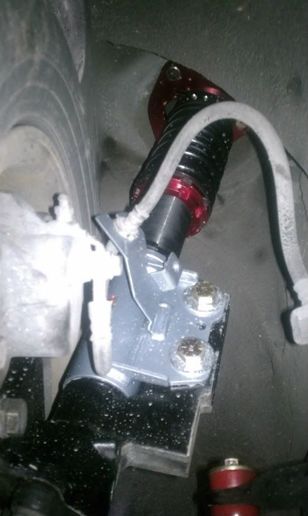

-
One possible orientation, directly aft, hardly any geometry change… would work very nicely orienting the camber plate to also face front to back
Another possible configuration, spun 3/4 of the way forward, if straight forward is 0 degrees, this would be 40-ish… side effect is increased camber gain on turn, best used with camber plates in regular position
Here is the top view of the second style, note that the center point of the original strut tube would be approximately where the shadow for the lower right stud is on the camber plate
Comments? -
Please think harder about that… you're good at doing diagrams, what happens to that second one when the top is moved into position? -
Oh you get it now… and what's going to be the effect of that angle? You're so close cmon
-
I have a proposition for you, if I show you that anything can be negated by either adjustment or some ancillary product like bump correcting tierod ends, you buy a set as punishment
-
Pretty much every suspension angle looks screwed to me. Z31-specific coilovers, or welding S13 to the spindle like old-school, still remains the best way.- VG30DET (HE341) 86 300ZX - 1982 280ZX Turbo - Headered NA 1986 300ZX 2+2 - 2000 Xterra - -
You said camber would be a problem, here's your camber:
You said the steering angle would be fucked, here's the difference:
-
I'm talking millimeters of difference and you guys are still skeptical… did you forget we have adjustable tension rods? adjustable tierods with spacers? camber plates that can be rotated?
-
Isn't Caster measured from the center of the top of the strut to the center of the wheel? In that case, the angle of the coilover won't affect the Caster, although the angle may cause some other weird things since the pressure on the spring isn't centered. I'm no engineer, but putting angled pressure on a spring may cause slight binding or at least a difference in spring rate. It really shouldn't affect caster, camber or toe though, assuming the hub location is unchanged. If only the coilover is angled, the geometry stays the same."Understeer is when you hit the wall with the front of the car. Oversteer is when you hit the wall with the rear of the car. Horsepower is how fast you hit the wall. Torque is how far you take the wall with you…"
-'68 Datsun 1600 Roadster
Build Thread: http://community.ratsun.net/topic/21…-build-thread/
-'85 300zx Turbo
Build Thread: http://z31performance.com/showthread…)build-thread! -
This whole idea…loading the shock incorrectly and such…is about as brilliant as that guy who put S2000 struts on a Z31, loading them in a way they werent designed to be.- VG30DET (HE341) 86 300ZX - 1982 280ZX Turbo - Headered NA 1986 300ZX 2+2 - 2000 Xterra - -
They are not loaded incorrectly, unless every car that uses offset mount points is loading incorrectly, in that case there are >130 million cars loading their suspension incorrectlymichaelp;338101 wrote: This whole idea…loading the shock incorrectly and such…is about as brilliant as that guy who put S2000 struts on a Z31, loading them in a way they werent designed to be. -
Put them on a car. Align it and get EVERYTHING in spec. Then go drive it. Write back when the alignment is crap.- VG30DET (HE341) 86 300ZX - 1982 280ZX Turbo - Headered NA 1986 300ZX 2+2 - 2000 Xterra - -
Clearly you don't really understand suspension if you think / that is ok. You can not tilt the upright to satisfy a ruined upper mounting point. The suspension doesn't work like that.G-E;338095 wrote:
Since you don't understand why we have such huge problems with your adapter, you simply need to get these on a car, and go to an alignment shop with modern equipment. Take a measurement and see where all the camber, caster, toe, sai, kingpin, included angle, ackerman and all the other angles the machine measures are at. Then compare them to a normal Z31.
~Alexsplatter fake blood on fubar'd quarter and roll out.
pedestrians=mobile clipping points -Benedict on PurePontiackid's 280zx -
This is the only PROPER way to do this idea…it keeps all of the geometry as intended/

Thanks stufferton for knowing what you're doing!- VG30DET (HE341) 86 300ZX - 1982 280ZX Turbo - Headered NA 1986 300ZX 2+2 - 2000 Xterra - -
I'm not going to pay for 5 alignments just to show you various examples because then I'd have to charge $400 per set to make my money back, I'm showing you it's easily done
If you can't wrap your brain around some very simple physics, then don't go fear mongering…
No one has suggested everything will remain identical to a z31 mac-strut setup, no one has suggested the parts will in any way fail from weakness, no one has brought up any geometry issue that can't be counteracted if not desired, all we have is a bunch of people saying they can't see it working out…
If you align the strut to be in line with the kingpin, you could use V2 bumpsteer spacers to move the spindle out to match the distance offset, the camber plate would still work as normal… you will need offset tierods for this setup ideally anyway
Here's some guidelines for the slow:
If you align the strut aft of the kingpin, you can rotate the camber plate to be front to back, and slide the top of the strut rearwards by at least half the distance, which will halve the steering arm tilt as well
If you align the strut 3/4 forward, you can swap the struts left to right to allow the camber plate to move diagonally forward and inward to closely match the offset
The less you lower your vehicle, the less pronounced all the effects, the example I'm showing you is a total unloaded strut height of 20" +/- from kingpin center to camberplate top… if you aren't that low, you will need to adjust less
Likewise the stiffer your springs, the less geometry changes as there is less travel -
I don't disagree, this keeps everything the same, except now you can't get to the adjuster on an inverted coilover, adds cost, can't be configured on the alignment rack before weldingmichaelp;338106 wrote: This is the only PROPER way to do this idea…it keeps all of the geometry as intended/
Thanks stufferton for knowing what you're doing!
It also can't do anything like increase camber or decrease ackerman…

Copyright © 2006–. All rights reserved. Privacy Policy